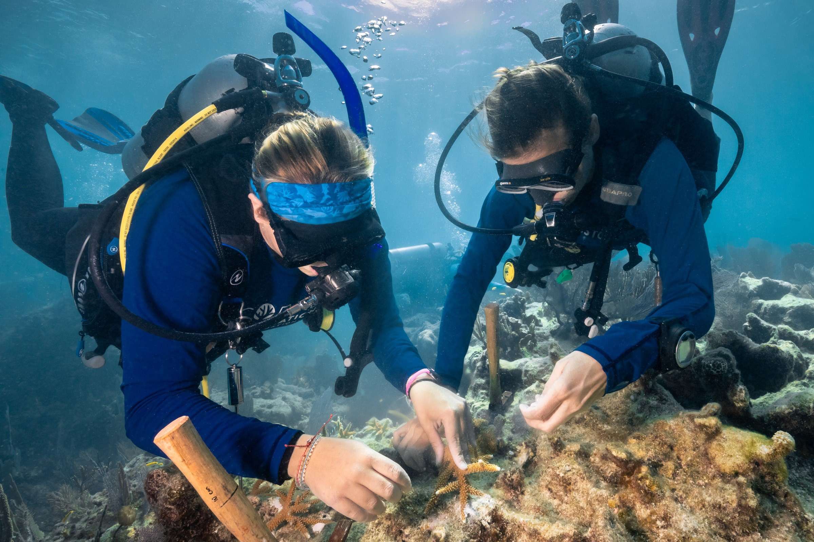

Back to the reef

In 2018, divers replanted nursery-grown staghorn coral on this reef, fixed in place with marine epoxy.
NOAA and its partners grow and plant corals to help restore Florida's reefs.

In 2018, divers replanted nursery-grown staghorn coral on this reef, fixed in place with marine epoxy.
NOAA and its partners grow and plant corals to help restore Florida's reefs.
Link copied